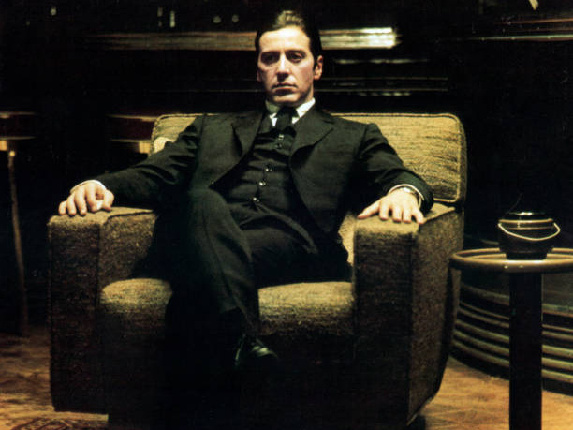

Galéria

Informácie o filme
Gangsterská dráma "Krstný otec", podľa bestselleru Maria Puza, je významným dielom tzv. Nového Hollywoodu. Film, zasadený do prostredia newyorského mafiánskeho klanu Corleonovcov, sleduje vzostup organizovaného zločinu po 2. svetovej vojne. Režisér Francis Ford Coppola vernou adaptáciou zachoval ducha príbehu a jeho komplexitu. Ocenený film sa výrazne spoliehal na herecké obsadenie a predstavenie hlavných postáv.
Herecké obsadenie
- Marlon Brando Don Vito Corleone
- Al Pacino Michael Corleone
- James Caan Santino "Sonny" Corleone
- Richard S. Castellano Peter Clemenza
- Robert Duvall Tom Hagen
- Sterling Hayden Kapitán McCluskey
- John Marley Jack Woltz
- Richard Conte Don Emilio Barzini
- Al Lettieri Virgil "Turek" Sollozzo
- Diane Keaton Kay Adams
Hudba vo filme
| Názov skladby | Interpret | Dátum vydania |
| The Godfather Waltz | Nino Rota | 1972 |
| I Have But One Heart | Nino Rota, Carlo Savina | 1972 |
| The Pickup | Nino Rota | 1972 |
| Connie's Wedding | Nino Rota, Carlo Savina | 1972 |
| Sicilian Pastorale | Nino Rota | 1972 |
| Love Theme | Carlo Savina | 1972 |
| Apollonia | Nino Rota | 1972 |
| I Have But One Heart | Al Martino | 1972 |
| The Baptism | Carlo Savina, Nino Rota | 1972 |